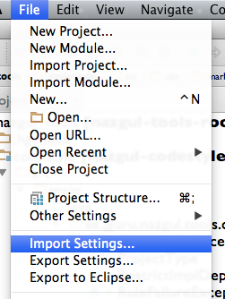

Setting up IntelliJ IDEA for use with the Nazgul Framework Codestyle
For later IntelliJ IDEA versions, setup your IDE by importing the resources/codestyle/idea/settings.jar file into your IDE, by selecting it from the “Import Settings…” menu.

Following this, you may need to alter the path to the checkstyle configuration within the codestyle project, as illustrated within the image below. You can access the checkstyle setting from the IDEA settings menu.